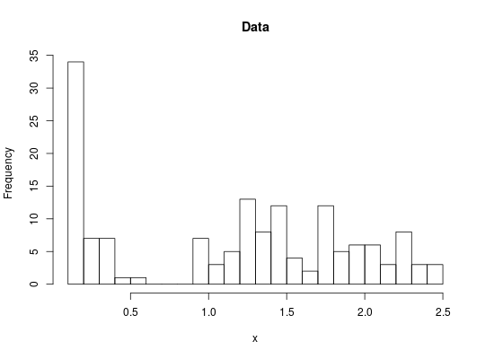
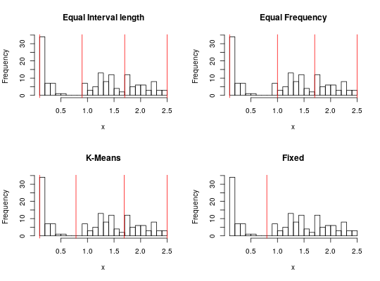

This function implements several basic unsupervized methods to convert continuous variables into a categorical variables (factor) suitable for association rule mining.
discretize(x, method="interval", categories = 3, labels = NULL, ordered=FALSE, onlycuts=FALSE, ...)
kmeans. discretize only implements unsupervised discretization. See packages discretization or RWeka for supervised discretization.
A factor representing the categorized continuous variable or, if
onlycuts=TRUE, a vector with the interval boundaries.
data(iris) x <- iris[,4] hist(x, breaks=20, main="Data")def.par <- par(no.readonly = TRUE) # save default layout(mat=rbind(1:2,3:4)) ### convert continuous variables into categories (there are 3 types of flowers) ### default is equal interval width table(discretize(x, categories=3))#> #> [0.1,0.9) [0.9,1.7) [1.7,2.5] #> 50 52 48hist(x, breaks=20, main="Equal Interval length") abline(v=discretize(x, categories=3, onlycuts=TRUE), col="red") ### equal frequency table(discretize(x, "frequency", categories=3))#> #> [0.1,1.0) [1.0,1.7) [1.7,2.5] #> 50 52 48hist(x, breaks=20, main="Equal Frequency") abline(v=discretize(x, method="frequency", categories=3, onlycuts=TRUE), col="red") ### k-means clustering table(discretize(x, "cluster", categories=3))#> #> [0.100,0.792) [0.792,1.705) [1.705,2.500] #> 50 54 46hist(x, breaks=20, main="K-Means") abline(v=discretize(x, method="cluster", categories=3, onlycuts=TRUE), col="red") ### user-specified table(discretize(x, "fixed", categories = c(-Inf,.8,Inf)))#> #> [-Inf, 0.8) [ 0.8, Inf] #> 50 100#> #> small large #> 50 100hist(x, breaks=20, main="Fixed")par(def.par) # reset to default ### prepare the iris data set for association rule mining for(i in 1:4) iris[,i] <- discretize(iris[,i], "frequency", categories=3) trans <- as(iris, "transactions") inspect(head(trans, 1))#> items transactionID #> [1] {Sepal.Length=[4.3,5.5), #> Sepal.Width=[3.3,4.4], #> Petal.Length=[1,3.0), #> Petal.Width=[0.1,1.0), #> Species=setosa} 1#> Sepal.Length=[4.3,5.5) Sepal.Length=[5.5,6.4) Sepal.Length=[6.4,7.9] #> 1 TRUE FALSE FALSE #> 2 TRUE FALSE FALSE #> 3 TRUE FALSE FALSE #> Sepal.Width=[2.0,3.0) Sepal.Width=[3.0,3.3) Sepal.Width=[3.3,4.4] #> 1 FALSE FALSE TRUE #> 2 FALSE TRUE FALSE #> 3 FALSE TRUE FALSE #> Petal.Length=[1,3.0) Petal.Length=[3,5.0) Petal.Length=[5,6.9] #> 1 TRUE FALSE FALSE #> 2 TRUE FALSE FALSE #> 3 TRUE FALSE FALSE #> Petal.Width=[0.1,1.0) Petal.Width=[1.0,1.7) Petal.Width=[1.7,2.5] #> 1 TRUE FALSE FALSE #> 2 TRUE FALSE FALSE #> 3 TRUE FALSE FALSE #> Species=setosa Species=versicolor Species=virginica #> 1 TRUE FALSE FALSE #> 2 TRUE FALSE FALSE #> 3 TRUE FALSE FALSE